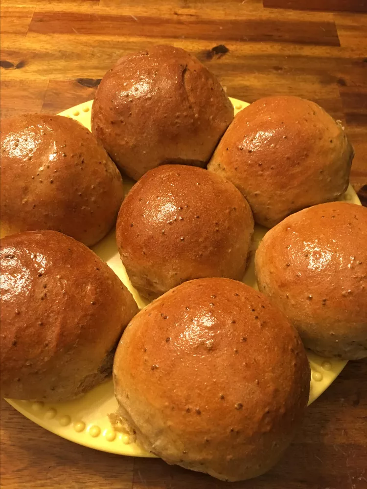

Marvelous Soya Buns

Description
"Buns" typically refer to a type of bread roll that is soft and often slightly sweet. They can come in various forms and are used in a variety of culinary contexts. Here are some common types and uses of buns:
Overall, buns are a staple in many cuisines, serving as a base for sandwiches, side dishes, or standalone treats.
Ingredients
- Okara
- Whole wheat flour
- Date syrup
- Baking Powder
- Butter
- salt
- Vegetable oil
Making Procedure
- In a bowl combine flour, baking powder and salt together.
- In another bowl mix your okara, date syrup and butter very well.
- Scoop the wet mixture into the bowl containing dry mixture and mix until incoperated into a dough.
- Allow the dough to sit covered for about five minutes.
- cut and roll into small balls as the baking powder also acts as a rising agent
- Fry in a pre-heated oil enough to cover the rolls while frying.